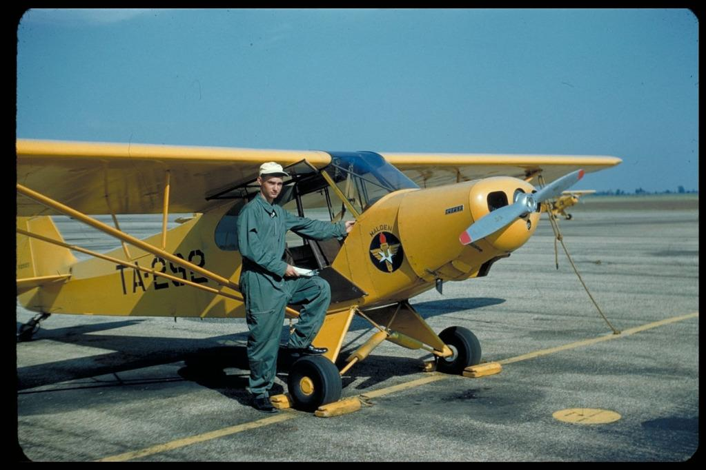

Aircraft History
The Monster Cub was not created as a completely new aircraft — it evolved from the proven Piper PA-18 Super Cub, a legendary tailwheel aircraft introduced in the late 1940s. What followed was a long history of modifications and upgrades that transformed the Super Cub into the powerful, rugged aircraft commonly known as the Monster Cub.
Built from a proven bush-plane design.
By the late 1940s, Piper had developed the PA-18 Super Cub as an improved successor to the earlier Piper Cub. Instead of starting from scratch, Piper refined the successful Cub formula with a stronger structure, improved aerodynamics, and more powerful engines. Decades later, heavily modified Super Cubs became known as “Monster Cubs,” combining the original aircraft’s rugged design with increased engine power and STOL capability.

Super Cub introduced
Piper introduces the PA-18 Super Cub, an improved successor to the Piper J-3 Cub. It features a stronger airframe, improved performance, and more powerful engine options, establishing the foundation for the aircraft that would later inspire Monster Cub modifications.
1960s
The Super Cub becomes a bush aircraft
The PA-18 gains a reputation for operating from short and unimproved airstrips. Its lightweight construction, high-wing layout, and tailwheel landing gear make it popular for utility, training, and backcountry flying.
1990s
Performance modifications grow
Owners and builders begin extensively modifying Super Cubs with larger engines, improved landing gear, larger tires, and other upgrades to increase their STOL and backcountry capabilities.
The “Monster Cub” concept emerges
Highly modified Super Cubs become increasingly associated with the “Monster Cub” nickname, reflecting their larger engines, reinforced structures, oversized tires, and increased performance compared with standard Super Cubs.
High-performance Monster Cubs
Monster Cub builds continue to receive upgrades such as 180 HP-class engines, heavy-duty landing gear, tundra tires, and modified wings, creating aircraft optimized for demanding bush operations.
A Super Cub taken to the extreme
The Monster Cub represents the evolution of a proven bush-plane design into a high-performance STOL aircraft. While there is no single standardized Monster Cub production line, individual builds continue the Super Cub tradition of power, ruggedness, and short-field capability.